Research
Advanced Positioning Systems
Linear Frequency Binary Offset Carrier(LFBOC)
Modulation for Next-Generation GNSS (2020 ~)
-
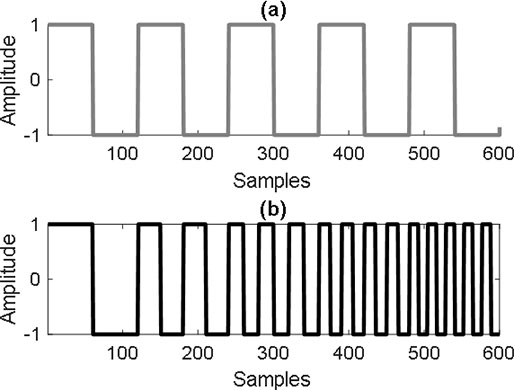
(a) conventional BOC
(b) LFBOC -
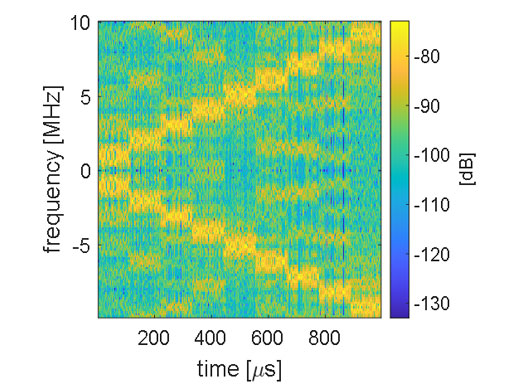
LFBOC STFT
(2021) -
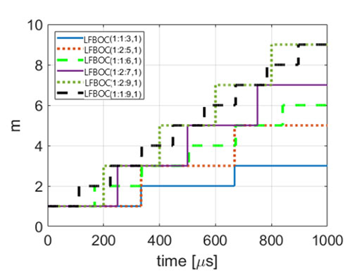
LFBOC with various
combinations(2021) -
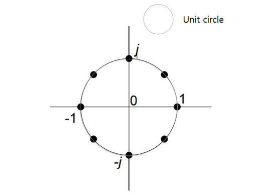
Constellation
Diagram
Introduction of Research
To mitigate the impact of interference in the Global Navigation Satellite System (GNSS) and the problem of Ranging degradation in multipath channels in urban areas.
Competitiveness of Research
Development of Linear Frequency Binary Offset Carrier (LFBOC) which is a subcarrier whose frequency of BOC linearly increases or decreases over time during the pseudocode period, which increases the positioning performance and gets robust for interference effects.
Conducting multi-signal generation research that satisfies Constant Envelope based on LFBOC, aiming for Korea Positioning System (KPS) regional navigation satellite signal service.
Research Achievements
Paper
Next-generation GNSS modulations Stepped-Frequency Binary Offset Carrier Modulation for Global Navigation Satellite Systems (under review on IEEE TAES 2022)
Time-Division-Multiplexing Tertiary Offset Carrier Modulation for GNSS (under review on JPNT 2022)
Variable BOC Modulation Technique and Performance Analysis for Next-Generation GNSS, 2020 IPNT conference, November 2020
AI-based NLOS satellite Classifier
for Multipath channel
-
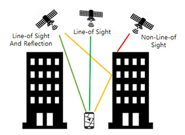
NLOS/LOS Satellite
Signal in Urban canyon -
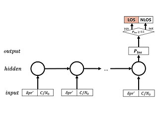
RNN-based
NLOS classifier -
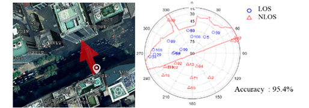
Classification Results in
Urban canyon (2019)
Introduction of Research
To increase positioning accuracy in urban areas, we aim to classify the non-line of sight (NLOS) signal that causes a multi-path error due to the diffraction and reflection effects of high-rise buildings in downtown areas, which generates positioning errors by tens of meters in urban canyon.
Competitiveness of Research
RNN-based NLOS/LOS signal classifier that minimizes the impact on NLOS signals occurring in urban areas.
The NLOS classification accuracy reaches about 95%, and the accuracy of positioning is improved by about 50% on average through actual experiments in urban canyons such as Gangnam, Seoul.
Research Achievements
Paper
AI-based Multipath mitigation techniques GNSS NLOS Signal Classifier with Successive Correlation Outputs using CNN (under review on JPNT 2022)
GPS First Arrival Path Detection Network using MLP-Mixers, IEEE Transactions on Wireless Communications 2022
Enhancing GNSS Performance and Detection of Road Crossing in Urban Area Using Deep Learning, IEEE Intelligent Transportation Systems Conference, October 2019
GNSS NLOS Discrimination and Multipath Error Compensation using Deep Learning, 2019 ISGNSS Conference, October 2019
Cellular Positioning
-
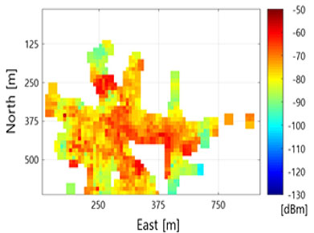
Weight map from
Multiple Cellular measurements (2020) -
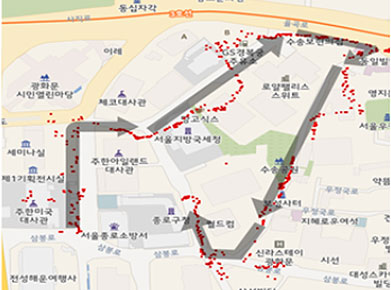
Cellular Positioning Results
(Jongno-gu, Seoul, 2020)
Fingerprint Algorithm
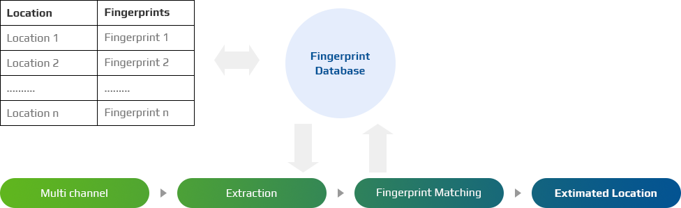Introduction of Research
To measure the location accurately in urban areas where high-rise buildings are so concentrated that GPS signals are shaded, we suggest a cellular communication-based Fingerprint localization algorithm.
Competitiveness of Research
Development of a cellular communication-based Fingerprint localization algorithm that measures the location by comparing the user’s cellular signal measurements with those from Fingerprint databases.
This algorithm has an average error of less than 30 meters in the city center, a GPS signal shaded area, and has a higher accuracy and measurement success rate than GPS signal-based measurement technology.
Research Achievements
Cellular Positioning system with LTE Fingerprint by AVE Lab is currently serviced by KT in 2019.
Paper
위치 기반 서비스 제공 방법, 전자 장치, 서버 및 저장 매체, March 2021
다중 주파수에서의 다중 하향링크 정보를 이용한 단말 위치의 측위 방법 및 측위 장치, March 2021
Assisted-GNSS
-
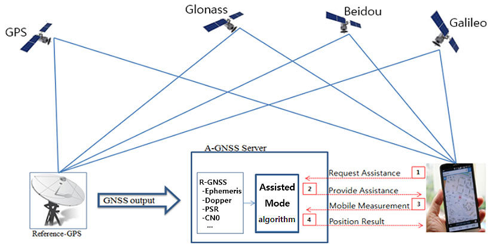
Architecture of Assisted-GNSS (2018)
Introduction of Research
Assisted-GNSS(A-GNSS) is a satellite-based localization system to reduce TTFF(Time to First Fix), which improves the startup performance of achieving satellite information for the receiver(smartphone) by receiving assistance information from the server.
Competitiveness of Research
By using Reference-GPS output(Line-of-Sight satellite navigation data) which reduces TTFF, the computation cost of A-GNSS is 1000 times lower than Stand-alone mode.
A-GNSS server provides necessary Assistance Data(Code phase, Doppler frequency, and so on) to the receiver so that receiver measures the location in seconds very quickly, which takes at least 30 seconds in Stand-alone mode.
Research Achievements
A-GNSS version 1.0(GPS, Glonass) by AVE Lab is commercially serviced by SKT in 2016.
A-GNSS version 2.0(GPS, Glonass, Galileo, Beidou) by AVE Lab is commercially serviced by SKT in 2018.
A-GNSS version 2.0(GPS, Glonass, Galileo, Beidou) by AVE Lab is commercially serviced by KT in 2019.
It is officially confirmed by Korea Communication Commission that localization performance of KT and SKT that uses AVE lab’s A-GNSS is twice as good as that of LGU+ that uses Qualcomm’s A-GNSS
(Localization error - KT: 34.5m, SKT: 39.5m, LGU+: 82.2m).Paper
A-GNSS MS-Assisted Mode의 다중 위성 항법 구현 및 성능 분석, 2018 IPNT Conference, November 2018
MS-Assisted GNSS 성능 분석, 2016 KGS Conference, November 2016
Patent
단말 측위 장치 및 단말 측위 방법, Feburary 2021